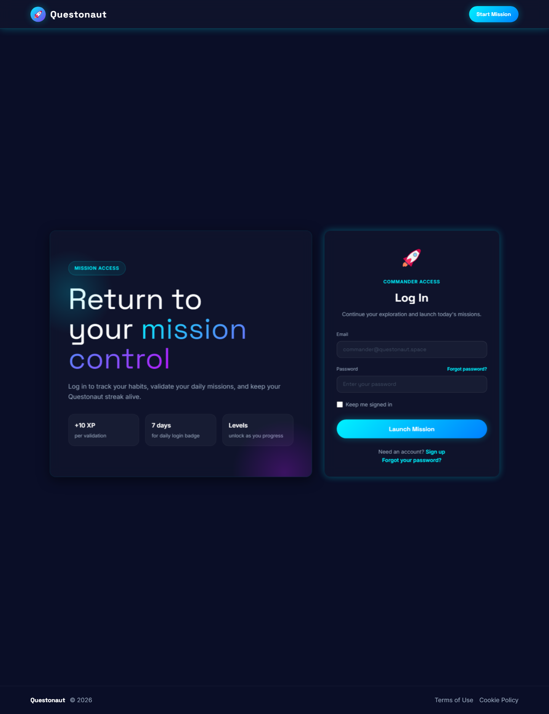
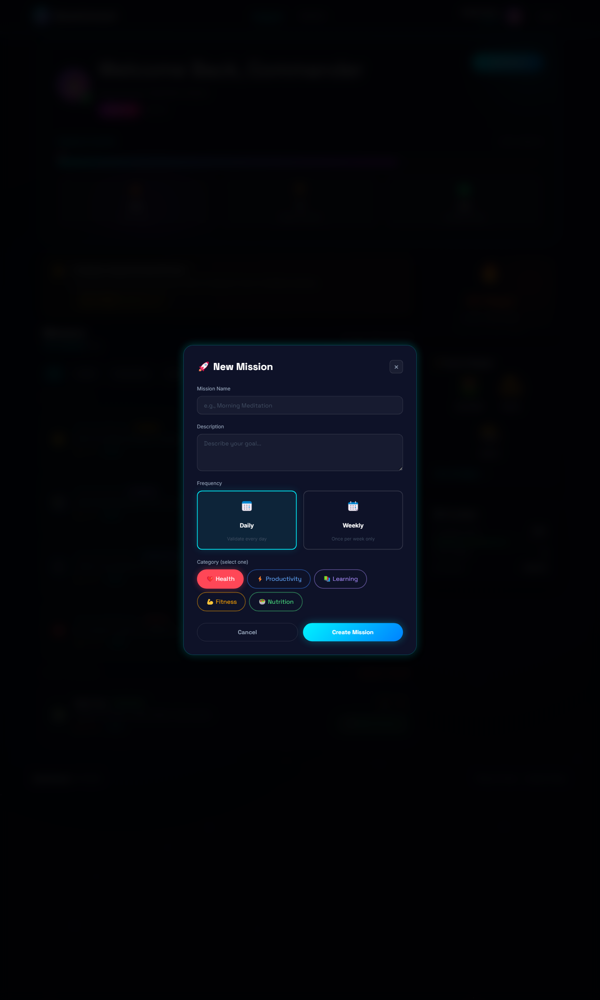

Screenshots
Product views captured from the current Questonaut experience.
This gallery highlights the current MVP surfaces used to present the product clearly on GitHub Pages, without depending on the Rails runtime.

Landing page
Introduces the space-themed positioning and directs visitors toward the core user flow.

Login
The current mission-control login flow keeps authentication focused, readable, and aligned with the product theme.

Dashboard
The main hub for progress, mission management, quick validation, and streak visibility.

New mission modal
Mission creation now happens directly from the dashboard with a focused modal, category selection, and frequency choices.

Mission report
Charts, badge collection, and mission analysis make the current progression loop easy to read at a glance.